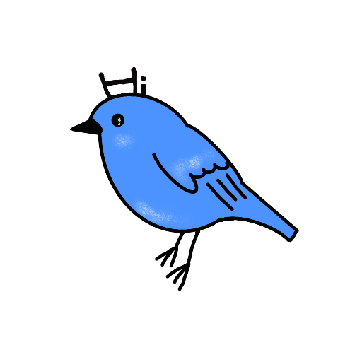
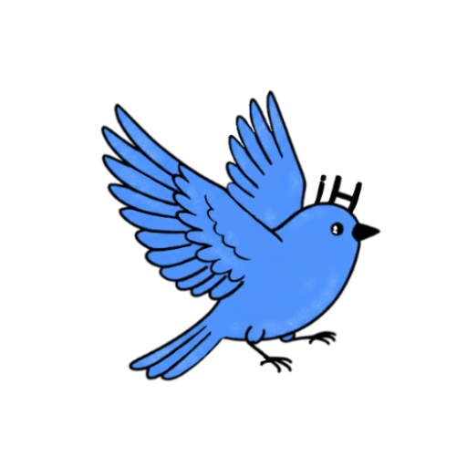
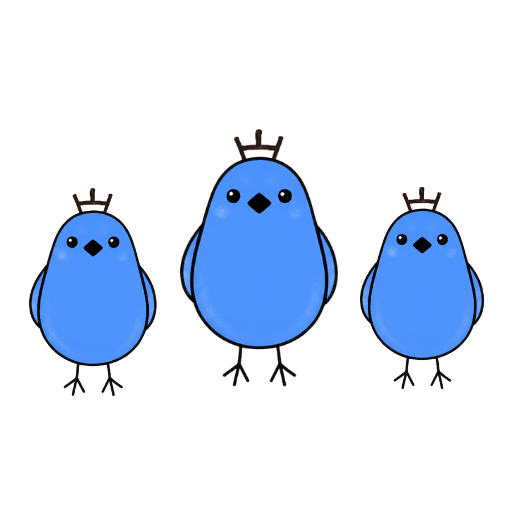

考える扉
正しいAIとの向き合い方
いつから
私たちは
答えだけを
求めるように
なってしまったのか
考えるとは
選ぶことではなく
問いをつなげること。
その感覚を確かめるために、
この扉があります。
はじめましょう。

この場は、ノウハウでも思想でもなく
AIの存在する今と未来をどう人間として向き合うかを考える場です。
Stage 01
最近
あなたは何を考えましたか？
問いをつなげて思考を広げること。
ここから
「あなたの思考」が始まります。
Stage 02
人間とAIの向き合い方は？
間違えば人間をダメにしてしまう。
「人間らしさ」を見直す機会です。
Stage 03
あなたの言葉は
生きていますか？
テンプレ言葉は響かない。
本当の言葉だけが
人の心を震わせます。


【考える扉】
policy
人間にしか出来ないことを考える。
６枚のカード、開いてみてください。
考えることは人間が持つ最大能力
